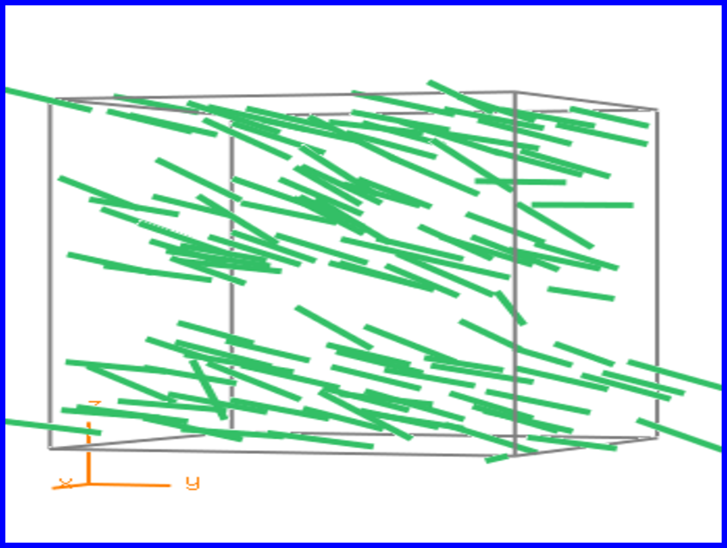
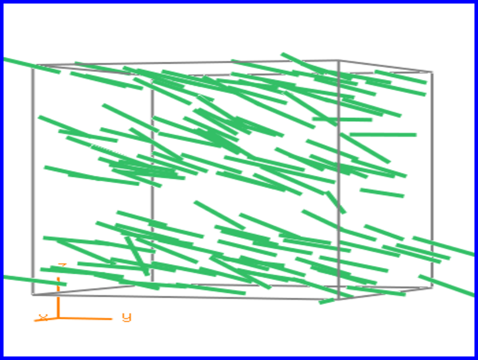

About the project
In this project we modelled a two-dimensions and three-dimensions cooling simulation of Liquid Crystals.
We used Monte Carlo Simulation with Gay-Berne Potential.
In this site you can find some educational information about Liquid Crystals, including their famous use in LCDs, as well as how they work, and a summary of what we saw and discovered.
In this project we investigate the Smectic phase of Liquid Crystals.

 

The molecules tend to point in the same direction and to align themselves in layers or planes.
About us
We are Nadir Izrael and Hila Glanz, students for Physics Bsc. and Computer Science Bsc.
The project was done under the supervision of Dr. Joan Adler, head of the Computational Physics Group at the Department of Physics - Technion - Israel Intitude of Technology.